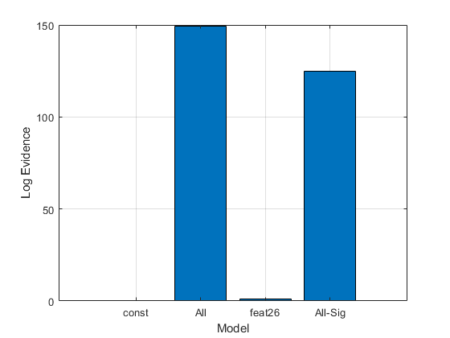

clear all
close all
load iono_data.mat
t = iono_data(:,35) - 1;
x = iono_data(:,[1,3:34]);
[N,P] = size(x);
opt.verbose=1;
M = blr_fit (x,t,opt);
figure
plot(M.z(1:end-1));
xlabel('Parameter');
ylabel('Z-score');
grid on
hold on
plot([1 P],[1.96,1.96],'r-');
plot([1 P],[-1.96,-1.96],'r-');
model(1).x=[];
model(2).x=x;
model(3).x=x(:,26);
ind=find(abs(M.z(1:P))>1.96);
model(4).x=x(:,ind);
name={'const','All','feat26','All-Sig'};
F = blr_compare(model,name,t,opt);
Iteration 3, Log Joint = -104.193499
Iteration 4, Log Joint = -102.131348
Iteration 5, Log Joint = -102.076333
Iteration 6, Log Joint = -102.076262
Iteration 3, Log Joint = -229.307894
Iteration 3, Log Joint = -87.410599
Iteration 4, Log Joint = -77.485058
Iteration 5, Log Joint = -75.459408
Iteration 6, Log Joint = -75.292165
Iteration 7, Log Joint = -75.289890
Iteration 3, Log Joint = -227.093401
Iteration 4, Log Joint = -227.093384
Iteration 3, Log Joint = -108.120219
Iteration 4, Log Joint = -102.325551
Iteration 5, Log Joint = -101.244424
Iteration 6, Log Joint = -101.176927
Iteration 7, Log Joint = -101.176532

